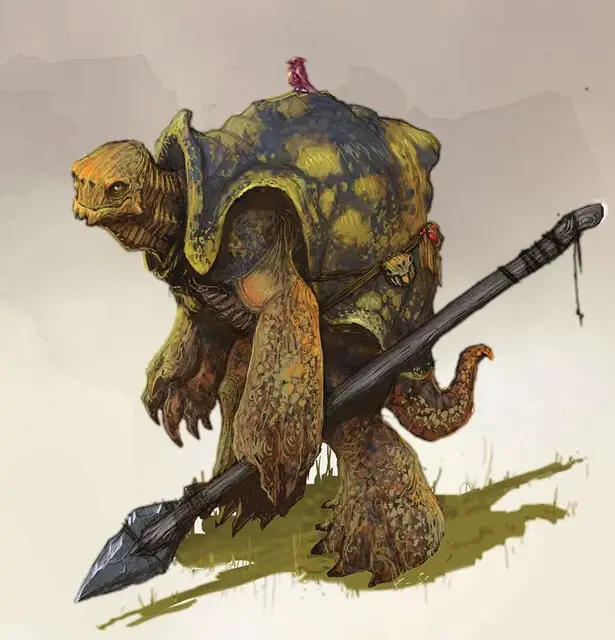

Тортл
Tortle
Средний Гуманоид (Тортл), законно-добрый

Класс Доспеха 17 (природный доспех)
Хиты 22 (4к8 + 4)
Скорость 30 футов
| мод | спас | ||
|---|---|---|---|
| СИЛ | 15 | +2 | +2 |
| ЛОВ | 10 | +0 | +0 |
| ТЕЛ | 12 | +1 | +1 |
| мод | спас | ||
|---|---|---|---|
| ИНТ | 11 | +0 | +0 |
| МДР | 13 | +1 | +1 |
| ХАР | 12 | +1 | +1 |
Навыки Атлетика +4, Выживание +3
Чувства пассивное Восприятие 11
Языки Общий, Акван
Опасность 1/4 (50 опыта)
Бонус мастерства +2
Среда обитания Побережье
Особенности
Задержка дыхания. Тортл может задерживать дыхание на 1 час.
Действия
Когти. Рукопашная атака оружием: +4 к попаданию, досягаемость 5 фт., одна цель. Попадание: 4 (1к4 + 2) рубящего урона.
Боевой посох. Рукопашная атака оружием: +4 к попаданию, досягаемость 5 фт., одна цель. Попадание: 5 (1к6 + 2) дробя- щего урона, или 6 (1к8 + 2) дробящего урона, используя посох двумя руками.
Лёгкий арбалет. Дальнобойная атака оружием: +2 к попаданию, дистанция 80/320 фт., одна цель. Попадание: 6 (1к8 + 2) колющего урона.
Панцирная защита. Тортл втягивается в панцирь, когда испытывает угрозу. Это даёт ему бонус +4 КД и преимущество на спасброски Силы и Телосложения. Пока он внутри панциря, тортл считается лежащим ничком, его скорость равна 0 фт. и не может быть увеличена, он совершает с помехой спасброски Ловкости, не может использовать реакцию и единственным действием, которым он может пользоваться, является бонусное действие для вылезания из панциря.
Описание
Тортлы – всеядные, черепахообразные гуманоиды с панцирями, покрывающими большую часть их тел.
У тортлов есть поговорка: «Мы носим наши дома на спине». Следовательно, тортл не долго остаётся на одном месте.
Рост взрослой черепахи около 6 футов, а её вес примерно от 450 до 500 фунтов. Самцы и самки практически схожи размерами и внешним видом.
Временные города. Поселения тортлов в основ- ном используются как нечто, вроде места собраний, где черепахи могут общаться друг с другом и незнакомцами. Тортлы не считают поселения ценными, чтобы защищать их ценой своей жизни, и они покидают поселения, когда уже не нуждаются в них.
Жизнь, полная странствий. Большинство тортлов любят смотреть, как живут другие существа и открывать для себя новые обычаи. Желание размножаться у них не появляется до конца своей жизни, и тортл может провести десятилетия вдали от своей родной земли, не чувствуя тоски по дому.
Тортлы рассматривают мир как место, где каждый день можно встретить новое чудо. Они живут ради шанса услышать лёгкий ветерок, вьющийся по пальмам, наблюдать за лягушкой, квакающей на листьях кувшинок, либо постоять в многолюдном рынке.